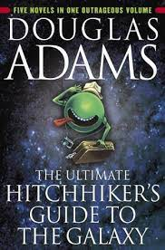
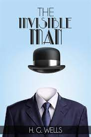
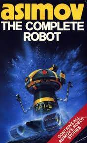

Sci-fi stories that got me hooked up with this genre...
Science fiction is a captivating genre, having about 7 - 10 percent of reading population. Since science is limitless and ever-evolving, sci-fi will never cease to capture new readers. This genre has extended possibilities. All sci-fi stories are not Asimovian (inventing new concepts), rather transforming existing science to a new level. Sci-fi had it's origin in the 1800s and as far as I know, when Frankenstein was published. Science fiction is not fantasy. Things that were considered fiction (robots in daily life, mission to mars, nanotechnology and many more) have been turned to reality.
I have been into this genre since 14, when I read an anthology of short sci-fi stories by many different authors. It literally opened up a new world for me. I suggest people to subsume themselves to a story rather than just reading. Science fiction has allured me into the field of Artificial Intelligence and Aerospace engineering which led me to read actual books related to these fields. I have listed few books which enhanced my reading habits and transported me to an interesting world.
Flowers for Algernon | Daniel Keyes
This story is about a man (Charlie Gordon) who has a very low intellectual level, who is constantly bullied by his co-workers. But know what, his IQ is going to be the highest in a few days. Initially, I was befuddled in the beginning of the story because the first few pages had typo errors. But later I realised, the story is presented through Gordon's view (a man with a very low IQ will make mistakes while spelling, won't he?). The story reaches it's pinnacle when Gordon becomes intelligent through the successful neurological operation. He becomes interested in neurology and starts testing his skills on a rat (Algernon). He then goes on to publish a paper on his findings. But the story takes a big turn when he starts losing his newly-gotten ability. He loses his intelligence faster than he gained it. And later on, goes working in the same old bullied-by-coworkers shop. This story emphasizes the plot of what happens when a person tries to do anything against nature. This story had a huge impact when I first read it, as it sails through Charlie Gordon's life. A heart-breaking statement by Charlie Gordon - "It is easy to make friends when you let people laugh at you".
Hitchhiker's Guide to the Galaxy | Douglas Adams
 As a humour-filled space travel book, this story immediately begins with intergalatic space travel. The story begins like this. Earth is destroyed because it poses a hinderance in the way of construction of a galactic bridge. An earthling is saved and taken away from earth by his friend, who is an alien. The book unravels the hitchhiking journey of the human and the rare encounters on other planets. This volume is an anthology of 5 novels. The title of the books are hella attractive, "Restaurant at the end of the universe", "So long, and thanks for all the fish". It is really difficult to infuse humour in science fiction. But Douglas Adams has proved to be a master at it. His characters, Arthur the human, Ford Prefect the alien, Marvin the humanoid, Zaphod Beeblebrox the two-headed and many more are classics who can never be forgotten. My ultimate favourite plot was when the supercomputer gives the answer to "Life, Universe and everything" as the number 42. This chapter has a deep meaning: humans cannot understand everything. There are certain things which are better left unanswered. Even Elon Musk funnily left an easter egg tweet based on this chapter when he turned 52, which said "42+10=52".
Invisible Man | H.G.Wells
 Written by the father of science fiction himself, this book is my most favourite of H.G.Wells. A physicist and scientist, Griffin, finds a way to change the refractive index of human body in a way that it neither absorbs light nor deflects it. There are many authors who just leave it to fantansy when they introduce science concepts. But H.G.Wells has provided a valid explanation of refractive indices. Although according to actual science, invisibility is an impossible feat, Wells has provided the inaccuracies of the experiment in the same story. The sotry goes like this - Griffin has some bad motives on using his new found invention. Griffin turns to his friend, Kemp, and reveals the invention and his intentions. But Kemp informs this to the police and the rest of the story happens. The story is a classic reminder of how going against nature would in turn go against us. Also, Wells' books have a noticeably different word usage, since these books were written in 1800s. I read that although Wells had classics like "Time Machine" and "The Island of Doctor Moreau", this book had earned him the title "Father of Science Fiction". Time Machine is also highly worth reading, a sci-fi drama in far future.
The Complete Robot | Isaac Asimov
 This book is a compilation of many science fiction stories about robots by Isaac Asimov. This book provided me with a revelation: Just reading a book for fun isn't the goal. I should have learnt something new, the book should have instilled in me something that is useful. I got interested in Artificial Intelligence only after reading Asimov's books. This book was the first Asimov I read in college. Susan Calvin, a robo psychologist shares her experiences of dealing with humanoids. My favourite of the lot was "Liar". The story's end gave me chills. Writing stories on robotics in 1960s would have been a difficult task, since it is the first of it's kind. Asimov also introduced humour in his robots which provided a lighter tone in a difficult concept. Powell and Donovan are unforgettable characters in comedy filled stories. This book not only dealt with robots but also space travel, microbiology and many more. .His famous "3 Laws of Robotics" are the "foundation" of all his stories. My favourite science fiction authors of all time are Asimov and Sujatha (a Tamil writer who introduced me to Asimov).